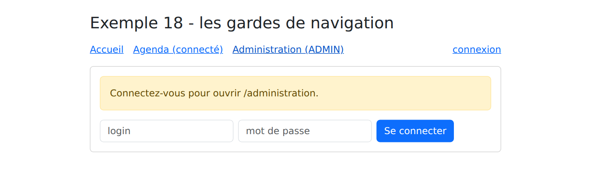

4. Le routage
4.1. Exemple 17 : le routeur
Une application [Angular] est une application à page unique : le navigateur ne charge qu'une page HTML. Pourtant, l'application [RdvMedecins] a plusieurs pages (/login, /agenda, /medecins...), chacune avec son adresse, que l'on peut mettre en favori ou recharger. C'est le rôle du routeur d'[Angular] : il associe chaque adresse à un composant, la « page », et affiche ce composant quand l'adresse change, sans rien demander au serveur.
| 17-routeur/src/
├── app/
│ ├── pages/
│ │ ├── accueil.ts
│ │ ├── liste-medecins.ts
│ │ ├── detail-medecin.ts
│ │ ├── recherche.ts
│ │ ├── a-propos.ts
│ │ └── page-introuvable.ts
│ ├── donnees.ts trois médecins "en dur"
│ ├── app.routes.ts les routes
│ ├── app.config.ts la configuration de l'application
│ ├── app.ts
│ └── app.html
├── index.html
└── main.ts
|
4.1.1. Les routes
| // =========================================================================
// 17-routeur/src/app/app.routes.ts - les ROUTES de l'application
// -------------------------------------------------------------------------
// Une application Angular est une application à page unique (SPA : Single
// Page Application) : le navigateur ne charge qu'UNE page HTML. Quand on
// clique sur un lien interne, aucune requête n'est envoyée au serveur : le
// routeur change l'adresse affichée par le navigateur, et remplace le
// composant affiché dans <router-outlet>.
//
// Une route associe un CHEMIN à un COMPOSANT (une "page") :
// 'medecins/:id' :id est un paramètre (/medecins/2 -> id = "2") ;
// '**' n'importe quel chemin : la page "introuvable". Les
// routes sont essayées dans l'ordre : elle vient en DERNIER.
// title : le titre de l'onglet du navigateur quand la page est affichée.
// =========================================================================
import { Routes } from '@angular/router';
import { Accueil } from './pages/accueil';
import { ListeMedecins } from './pages/liste-medecins';
import { DetailMedecin } from './pages/detail-medecin';
import { Recherche } from './pages/recherche';
import { PageIntrouvable } from './pages/page-introuvable';
export const routes: Routes = [
{ path: '', component: Accueil, title: 'Accueil' },
{ path: 'medecins', component: ListeMedecins, title: 'Médecins' },
{ path: 'medecins/:id', component: DetailMedecin, title: 'Un médecin' },
{ path: 'recherche', component: Recherche, title: 'Recherche' },
// chargement DIFFÉRÉ : le code de cette page n'est téléchargé qu'à la
// première visite (le compilateur en fait un fichier à part)
{ path: 'a-propos', loadComponent: () => import('./pages/a-propos'), title: 'À propos' },
// une redirection : l'ancienne adresse mène à la nouvelle
{ path: 'docteurs', redirectTo: 'medecins' },
{ path: '**', component: PageIntrouvable, title: 'Page introuvable' },
];
|
- ligne 24 : les routes forment un tableau d'objets de type [Routes] ;
- ligne 25 : le chemin vide : la page d'accueil, à l'adresse /. On ne met jamais de / au début d'un chemin ;
- ligne 27 : [:id] est un paramètre : /medecins/1, /medecins/2... affichent toutes le composant [DetailMedecin], qui reçoit la valeur de [id] ;
- ligne 31 : [loadComponent] remplace [component] : le composant n'est chargé qu'à la première visite de la page. Le compilateur range son code dans un fichier à part, téléchargé à ce moment-là ; le chargement de l'application en est accéléré. C'est ce qu'on fera pour toutes les pages de l'étude de cas ;
- ligne 33 : une redirection : /docteurs mène à /medecins ;
- ligne 34 : [**] : n'importe quel chemin. Les routes étant essayées dans l'ordre, celle-ci ne sert que si aucune autre ne convient : c'est la page « introuvable » ;
- [title] : le titre de l'onglet du navigateur, quand la page est affichée.
4.1.2. La configuration de l'application
| // =========================================================================
// 17-routeur/src/app/app.config.ts
// -------------------------------------------------------------------------
// provideRouter(routes) : on ajoute le routeur à l'application, avec ses
// routes (app.routes.ts). withComponentInputBinding() : les paramètres de
// l'adresse (/medecins/:id, ?q=...) sont transmis aux composants des pages
// comme des ENTRÉES (input()) - cf. pages/detail-medecin.ts.
// =========================================================================
import { ApplicationConfig } from '@angular/core';
import { provideRouter, withComponentInputBinding } from '@angular/router';
import { routes } from './app.routes';
export const appConfig: ApplicationConfig = {
providers: [provideRouter(routes, withComponentInputBinding())],
};
|
Jusqu'ici, la configuration de l'application tenait dans le fichier [main.ts]. Elle est désormais rangée à part, dans [app.config.ts], comme dans les projets créés par la commande [ng new] :
- ligne 15 : [provideRouter] ajoute le routeur à l'application, avec ses routes. [withComponentInputBinding()] transmet les paramètres de l'adresse aux composants des pages, sous forme d'entrées ([input()], exemple 10) : c'est la manière la plus simple de les lire.
| // =========================================================================
// 17-routeur/src/main.ts
// -------------------------------------------------------------------------
// La configuration de l'application (ses "providers") est rangée à part,
// dans app.config.ts : c'est la présentation habituelle d'un projet Angular.
// =========================================================================
import { bootstrapApplication } from '@angular/platform-browser';
import { appConfig } from './app/app.config';
import { App } from './app/app';
bootstrapApplication(App, appConfig).catch((erreur) => console.error(erreur));
|
- ligne 12 : [bootstrapApplication] reçoit la configuration.
| <!doctype html>
<html lang="fr">
<head>
<meta charset="utf-8">
<title>Exemple 17 - le routeur</title>
<base href="/">
<meta name="viewport" content="width=device-width, initial-scale=1">
</head>
<body>
<app-root></app-root>
</body>
</html>
|
- ligne 6 : [<base href="/">] : l'adresse à partir de laquelle le routeur calcule les chemins. Sans elle, les adresses à plusieurs niveaux (/medecins/2) ne fonctionneraient pas.
4.1.3. La coquille de l'application
Le composant racine devient une coquille : ce qui est commun à toutes les pages (ici, le titre et les liens), et un emplacement où s'affiche la page courante.
| // =========================================================================
// 17-routeur/src/app/app.ts - la "coquille" de l'application
// -------------------------------------------------------------------------
// - routerLink="..." : un lien interne. Sur une balise <a>, il produit un
// vrai href, mais un clic ne recharge pas la page : c'est le routeur qui
// agit. routerLinkActive="active" pose la classe "active" (celle de
// Bootstrap) sur le lien de la page affichée ;
// - <router-outlet /> : l'emplacement où s'affiche le composant de la
// route courante.
// =========================================================================
import { Component, inject } from '@angular/core';
import { toSignal } from '@angular/core/rxjs-interop';
import { NavigationEnd, Router, RouterLink, RouterLinkActive, RouterOutlet } from '@angular/router';
import { filter, map } from 'rxjs';
@Component({
selector: 'app-root',
imports: [RouterLink, RouterLinkActive, RouterOutlet],
templateUrl: './app.html',
})
export class App {
private readonly router = inject(Router);
// l'adresse courante, sous forme de signal : router.events est un flux
// (Observable, cf. exemple 19) d'événements de navigation ; on garde la
// fin de chaque navigation, et toSignal en fait un signal
protected readonly adresse = toSignal(
this.router.events.pipe(
filter((e) => e instanceof NavigationEnd),
// decodeURIComponent : %C3%A9 redevient é
map((e) => decodeURIComponent(e.urlAfterRedirects)),
),
{ initialValue: '' },
);
}
|
- ligne 19 : les directives du routeur utilisées par le template ;
- lignes 28-35 : l'adresse courante, affichée sous les liens. [router.events] est un observable (un flux d'événements, présenté à l'exemple 19) qui signale chaque étape des navigations. On ne garde que les fins de navigation (ligne 30), on en tire l'adresse, redirections comprises (ligne 32), et [toSignal] transforme le flux en signal, utilisable dans le template.
| <div class="container py-4">
<h1 class="h3 mb-3">Exemple 17 - le routeur</h1>
<nav class="nav nav-pills mb-3">
<!-- routerLinkActiveOptions exact : "/" ne doit pas être actif sur /medecins -->
<a class="nav-link" routerLink="/" routerLinkActive="active" [routerLinkActiveOptions]="{ exact: true }">Accueil</a>
<a class="nav-link" routerLink="/medecins" routerLinkActive="active">Médecins</a>
<!-- [queryParams] : les paramètres après le ? (/recherche?q=généraliste) ;
queryParams: 'ignored' : le lien reste actif quelle que soit la recherche -->
<a class="nav-link" routerLink="/recherche" [queryParams]="{ q: 'généraliste' }" routerLinkActive="active"
[routerLinkActiveOptions]="{ paths: 'exact', queryParams: 'ignored', fragment: 'ignored', matrixParams: 'ignored' }">Recherche</a>
<a class="nav-link" routerLink="/a-propos" routerLinkActive="active">À propos</a>
<a class="nav-link" routerLink="/docteurs">/docteurs (redirection)</a>
<a class="nav-link" routerLink="/page-inconnue">Lien cassé</a>
</nav>
<p class="small text-muted">adresse courante : <code>{{ adresse() }}</code></p>
<div class="card p-3">
<router-outlet />
</div>
</div>
|
- ligne 5 : [routerLink] : un lien interne. Sur une balise [<a>], il produit un véritable attribut [href] (le lien peut être ouvert dans un nouvel onglet), mais un clic ne recharge pas la page : c'est le routeur qui change l'adresse et l'affichage. [routerLinkActive="active"] pose la classe [active] de [Bootstrap] sur le lien de la page affichée. Sans l'option [exact], le lien / serait actif sur toutes les pages, puisque toutes les adresses commencent par / ;
- lignes 9-10 : [[queryParams]] : les paramètres placés après le [?] de l'adresse (/recherche?q=généraliste). L'option [queryParams: 'ignored'] garde le lien actif quelle que soit la recherche ;
- lignes 12-13 : un lien vers la redirection, et un lien vers une adresse qui n'existe pas ;
- ligne 17 : [<router-outlet />] : l'emplacement où s'affiche le composant de la route courante.
4.1.4. Les pages
| // des données "en dur", pour ne pas dépendre d'un serveur dans cet exemple
export interface Medecin {
id: number;
titre: string;
prenom: string;
nom: string;
specialite: string;
}
export const MEDECINS: Medecin[] = [
{ id: 1, titre: 'Mme', prenom: 'Marie', nom: 'PELISSIER', specialite: 'généraliste' },
{ id: 2, titre: 'Mr', prenom: 'Paul', nom: 'TATOU', specialite: 'pédiatre' },
{ id: 3, titre: 'Melle', prenom: 'Sophie', nom: 'DUPONT', specialite: 'généraliste' },
];
|
| import { Component } from '@angular/core';
@Component({
selector: 'app-accueil',
template: `
<p class="mb-0">Bienvenue. Cliquez sur les liens : l'adresse du navigateur change, la page n'est jamais
rechargée (ouvrez l'onglet Réseau des outils de développement pour le vérifier). Les boutons Précédent et
Suivant du navigateur fonctionnent, ainsi que le rechargement (F5) de n'importe quelle page.</p>
`,
})
export class Accueil {}
|
Une page est un composant ordinaire. Celle-ci n'a rien de particulier.
| // 17-routeur/src/app/pages/liste-medecins.ts - des liens avec paramètre
import { Component } from '@angular/core';
import { RouterLink } from '@angular/router';
import { MEDECINS } from '../donnees';
@Component({
selector: 'app-liste-medecins',
imports: [RouterLink],
template: `
<ul class="mb-0">
@for (m of medecins; track m.id) {
<!-- [routerLink] avec un tableau : le routeur assemble l'adresse /medecins/2 -->
<li><a [routerLink]="['/medecins', m.id]">{{ m.titre }} {{ m.prenom }} {{ m.nom }}</a></li>
}
</ul>
`,
})
export class ListeMedecins {
protected readonly medecins = MEDECINS;
}
|
- ligne 13 : [[routerLink]] reçoit ici un tableau : le routeur assemble l'adresse à partir de ses éléments (/medecins/2).
| // =========================================================================
// 17-routeur/src/app/pages/detail-medecin.ts - une page à paramètre
// -------------------------------------------------------------------------
// Le paramètre :id arrive en ENTRÉE (grâce à withComponentInputBinding,
// cf. app.config.ts), sous forme de chaîne : il suffit de déclarer une
// entrée qui porte le même nom. Le composant ne dépend alors plus du
// routeur : il serait aussi utilisable comme <app-detail-medecin id="2">.
// Router.navigate(...) : naviguer PAR LE CODE ; Location.back() : revenir
// à la page précédente, comme le bouton Précédent du navigateur.
// =========================================================================
import { Component, computed, inject, input } from '@angular/core';
import { Location } from '@angular/common';
import { Router } from '@angular/router';
import { MEDECINS } from '../donnees';
@Component({
selector: 'app-detail-medecin',
template: `
@if (medecin(); as m) {
<h2 class="h5">{{ m.titre }} {{ m.prenom }} {{ m.nom }}</h2>
<p>Spécialité : {{ m.specialite }}</p>
<div class="d-flex gap-2">
<button class="btn btn-sm btn-outline-secondary" (click)="retour()">Retour</button>
<button class="btn btn-sm btn-outline-primary" (click)="suivant()">Médecin suivant</button>
</div>
} @else {
<p class="text-danger mb-0">Le médecin n° {{ id() }} n'existe pas.</p>
}
`,
})
export class DetailMedecin {
readonly id = input.required<string>();
private readonly router = inject(Router);
private readonly location = inject(Location);
// computed : si l'on passe de /medecins/1 à /medecins/2, Angular RÉUTILISE
// le même composant et change seulement l'entrée id - le computed suit
protected readonly medecin = computed(() => MEDECINS.find((m) => m.id === Number(this.id())) ?? null);
protected retour(): void {
this.location.back();
}
protected suivant(): void {
const id = (Number(this.id()) % MEDECINS.length) + 1;
this.router.navigate(['/medecins', id]);
}
}
|
- ligne 33 : le paramètre [:id] de la route arrive dans l'entrée qui porte le même nom. Comme tout ce qui vient d'une adresse, c'est une chaîne de caractères ;
- ligne 39 : le médecin affiché est calculé à partir de l'entrée. Quand on passe de /medecins/1 à /medecins/2, [Angular] ne recrée pas le composant : il change seulement la valeur de l'entrée, et le [computed] suit ;
- lignes 27-29 : un identifiant inconnu (/medecins/9) est signalé ;
- ligne 42 : [Location.back()] : retour à la page précédente, comme avec le bouton Précédent du navigateur ;
- ligne 47 : [Router.navigate] : une navigation déclenchée par le code, avec le même tableau que [[routerLink]].
| // =========================================================================
// 17-routeur/src/app/pages/recherche.ts - une page pilotée par l'URL
// -------------------------------------------------------------------------
// /recherche?q=pédiatre : comme avec le formulaire GET du cours NestJS, la
// page est entièrement décrite par son adresse : on peut la mettre en
// favori, la recharger, revenir en arrière. Le paramètre q arrive, lui
// aussi, en entrée du composant.
// =========================================================================
import { Component, computed, inject, input, linkedSignal } from '@angular/core';
import { FormsModule } from '@angular/forms';
import { Router } from '@angular/router';
import { MEDECINS } from '../donnees';
@Component({
selector: 'app-recherche',
imports: [FormsModule],
template: `
<form class="d-flex gap-2 mb-3" (ngSubmit)="rechercher()">
<input name="saisie" class="form-control" placeholder="nom ou spécialité" [(ngModel)]="saisie">
<button class="btn btn-primary">Rechercher</button>
</form>
<ul class="mb-0">
@for (m of resultats(); track m.id) {
<li>{{ m.prenom }} {{ m.nom }} ({{ m.specialite }})</li>
} @empty {
<li class="text-muted">Aucun résultat.</li>
}
</ul>
`,
})
export class Recherche {
readonly q = input<string>(); // ?q=... (undefined s'il est absent)
private readonly router = inject(Router);
// le champ démarre avec la valeur de l'URL, et la suit si elle change
// (bouton Précédent), tout en restant modifiable : un linkedSignal
protected readonly saisie = linkedSignal(() => this.q() ?? '');
protected readonly resultats = computed(() => {
const q = (this.q() ?? '').toLowerCase();
return MEDECINS.filter((m) => `${m.prenom} ${m.nom} ${m.specialite}`.toLowerCase().includes(q));
});
protected rechercher(): void {
// on change l'URL ; l'affichage suit l'URL (entrée q)
this.router.navigate(['/recherche'], { queryParams: { q: this.saisie() } });
}
}
|
Cette page est entièrement décrite par son adresse, comme celle d'un formulaire GET : on peut la mettre en favori, la recharger, y revenir par le bouton Précédent.
- ligne 33 : le paramètre [q] de l'adresse arrive lui aussi en entrée ; il vaut [undefined] s'il est absent ;
- ligne 38 : le champ de saisie est un [linkedSignal] : il prend la valeur de l'adresse, la suit quand elle change (bouton Précédent), mais reste modifiable par l'utilisateur ;
- lignes 40-43 : les résultats dépendent de l'adresse, et non de la saisie : ils ne changent qu'à la validation du formulaire ;
- ligne 47 : valider le formulaire change l'adresse, qui change l'entrée [q], qui change les résultats.
| // 17-routeur/src/app/pages/a-propos.ts - une page chargée à la demande
// "export default" : loadComponent: () => import('./pages/a-propos') trouve
// le composant sans avoir à le nommer
import { Component } from '@angular/core';
@Component({
selector: 'app-a-propos',
template: `<p class="mb-0">Cette page a été téléchargée à la première visite (onglet Réseau : un fichier
chunk-XXXX.js). Son titre d'onglet vient de la route.</p>`,
})
export default class APropos {}
|
- ligne 11 : [export default] : la fonction [loadComponent] de la route ([import('./pages/a-propos')]) trouve le composant sans avoir à le nommer.
| import { Component, inject } from '@angular/core';
import { Router } from '@angular/router';
@Component({
selector: 'app-page-introuvable',
template: `<p class="text-danger mb-0">Aucune page à l'adresse <code>{{ adresse }}</code>.</p>`,
})
export class PageIntrouvable {
protected readonly adresse = inject(Router).url;
}
|
- ligne 9 : [Router.url] : l'adresse demandée.
4.1.5. L'exécution
[npm start 17-routeur] ; on clique sur Médecins, puis sur Paul TATOU :

On clique sur Recherche, on tape « pédiatre » et on valide : l'adresse change.

Le lien cassé mène à la page introuvable :

On pourra vérifier dans l'onglet Réseau des outils de développement du navigateur qu'aucune page n'est demandée au serveur lors des clics, sauf à la première visite de la page « À propos » (un fichier [chunk-XXXX.js]). On pourra aussi recharger n'importe quelle page (F5) : le serveur de développement renvoie toujours [index.html], et le routeur affiche la page correspondant à l'adresse. Un serveur de production devra faire de même : c'est ce que fera le serveur JSON au chapitre du déploiement.
4.2. Exemple 18 : les gardes de navigation
Certaines pages de l'application [RdvMedecins] sont réservées : l'agenda exige d'être connecté, la gestion des médecins exige le rôle ADMIN. Côté serveur, le cours [NestJS] a utilisé des gardes ([JwtAuthGuard], [RolesGuard]). Le routeur d'[Angular] a les siens : des fonctions appelées avant d'afficher une route, qui peuvent autoriser la navigation ou la détourner vers une autre adresse.
Cet exemple simule la connexion, sans serveur : trois comptes sont écrits « en dur ».
| 18-gardes/src/app/
├── pages/
│ ├── accueil.ts page publique
│ ├── connexion.ts page publique
│ ├── agenda.ts exige d'être connecté
│ └── administration.ts exige le rôle ADMIN
├── session.service.ts l'utilisateur connecté
├── gardes.ts les gardes
├── app.routes.ts
├── app.config.ts
├── app.ts
└── app.html
|
4.2.1. La session
| // =========================================================================
// 18-gardes/src/app/session.service.ts - une session SIMULÉE (sans serveur)
// -------------------------------------------------------------------------
// L'utilisateur connecté, dans un service racine : tous les composants et
// tous les gardes qui l'injectent partagent le même. (L'exemple 23 fera la
// même chose avec un vrai serveur.)
// =========================================================================
import { Injectable, signal } from '@angular/core';
export type Role = 'ADMIN' | 'DOCTOR' | 'USER';
export interface Utilisateur {
login: string;
role: Role;
}
// trois comptes "en dur" (mot de passe = login)
const COMPTES: Record<string, Role> = { admin: 'ADMIN', pelissier: 'DOCTOR', martin: 'USER' };
@Injectable({ providedIn: 'root' })
export class SessionService {
private readonly _utilisateur = signal<Utilisateur | null>(null);
readonly utilisateur = this._utilisateur.asReadonly();
connecter(login: string, password: string): boolean {
const role = Object.hasOwn(COMPTES, login) ? COMPTES[login] : undefined;
if (role === undefined || password !== login) {
return false;
}
this._utilisateur.set({ login, role });
return true;
}
deconnecter(): void {
this._utilisateur.set(null);
}
}
|
- ligne 11 : les trois rôles de l'application [RdvMedecins] ;
- ligne 19 : trois comptes, dont le mot de passe est le login ;
- lignes 23-24 : l'utilisateur connecté ([null] s'il n'y en a pas), dans un signal que seul le service peut modifier. Le service étant unique, les composants et les gardes qui l'injectent voient tous le même utilisateur ;
- ligne 27 : [Object.hasOwn] : on ne retient que les clés propres de l'objet [COMPTES]. Sans cette précaution, le login « constructor » trouverait une propriété héritée de tous les objets [JavaScript] ;
- lignes 26-33 : la connexion réussit si le compte existe et si le mot de passe est le bon.
4.2.2. Les gardes
| // =========================================================================
// 18-gardes/src/app/gardes.ts - des GARDES de navigation
// -------------------------------------------------------------------------
// Un garde (CanActivateFn) est une fonction que le routeur appelle AVANT
// d'afficher une route qui le déclare (canActivate: [...]). Elle renvoie :
// - true : la navigation continue ;
// - un UrlTree (une adresse, fabriquée par router.createUrlTree) : la
// navigation est remplacée par une redirection vers cette adresse.
// Un garde peut injecter des services (inject) : il s'exécute dans le
// contexte d'injection de l'application.
//
// C'est l'équivalent, côté client, des gardes NestJS (JwtAuthGuard,
// RolesGuard) - avec une différence FONDAMENTALE : un garde du client n'est
// qu'un confort. Le code du client est entre les mains de l'utilisateur, qui
// peut le modifier à volonté. La vraie protection des données reste celle
// du SERVEUR (cf. chapitre sur la boîte noire).
// =========================================================================
import { inject } from '@angular/core';
import { CanActivateFn, Router } from '@angular/router';
import { Role, SessionService } from './session.service';
// la page exige d'être connecté
export const connexionRequise: CanActivateFn = (_route, etat) => {
if (inject(SessionService).utilisateur() !== null) {
return true;
}
// pas connecté : à la page de connexion, en retenant où l'on voulait aller
return inject(Router).createUrlTree(['/connexion'], { queryParams: { redirect: etat.url } });
};
// la page exige l'un des rôles listés dans les données de la route (data.roles)
export const roleRequis: CanActivateFn = (route, etat) => {
const roles = route.data['roles'] as Role[];
const utilisateur = inject(SessionService).utilisateur();
if (utilisateur !== null && roles.includes(utilisateur.role)) {
return true;
}
// connecté, mais pas avec le bon rôle : retour à l'accueil, avec un motif
return inject(Router).createUrlTree(['/'], { queryParams: { refus: etat.url } });
};
|
- ligne 24 : un garde est une fonction de type [CanActivateFn]. Le routeur lui passe la route à activer et l'état de la navigation (qui contient l'adresse demandée, [etat.url]) ;
- ligne 25 : un garde peut injecter des services, avec [inject], comme un composant ;
- ligne 26 : [true] : la navigation continue ;
- ligne 29 : sinon, le garde renvoie une autre adresse, fabriquée par [createUrlTree] : la navigation est remplacée par une redirection vers la page de connexion. Le paramètre [redirect] retient la page demandée, pour y revenir après la connexion ;
- ligne 34 : [route.data] : les données libres que la route déclare (ici, les rôles autorisés). Le même garde sert ainsi à toutes les pages réservées, quels que soient leurs rôles ;
- ligne 40 : un utilisateur connecté, mais dont le rôle ne convient pas, est renvoyé à l'accueil, avec le motif du refus.
Les commentaires des lignes 12-16 sont essentiels : un garde du client n'est qu'un confort pour l'utilisateur, à qui il évite d'ouvrir une page qui ne pourrait pas fonctionner. Le code du client s'exécute dans le navigateur ; l'utilisateur peut le lire et le modifier. La protection des données reste celle du serveur, qui vérifie les droits à chaque requête.
4.2.3. Les routes protégées
| // =========================================================================
// 18-gardes/src/app/app.routes.ts - des routes PROTÉGÉES
// -------------------------------------------------------------------------
// - canActivate : les gardes à franchir, dans l'ordre ;
// - data : des informations libres attachées à la route (ici, les
// rôles autorisés), que le garde lit.
// =========================================================================
import { Routes } from '@angular/router';
import { connexionRequise, roleRequis } from './gardes';
import { Accueil } from './pages/accueil';
import { Connexion } from './pages/connexion';
import { Agenda } from './pages/agenda';
export const routes: Routes = [
{ path: '', component: Accueil },
{ path: 'connexion', component: Connexion },
{ path: 'agenda', component: Agenda, canActivate: [connexionRequise] },
{
path: 'administration',
// chargement différé : le code n'est téléchargé qu'une fois les gardes franchis
loadComponent: () => import('./pages/administration'),
canActivate: [connexionRequise, roleRequis],
data: { roles: ['ADMIN'] },
},
{ path: '**', redirectTo: '' },
];
|
- ligne 18 : [canActivate] : la liste des gardes de la route ;
- ligne 22 : la page d'administration est chargée à la demande : son code n'est téléchargé que si les gardes l'autorisent ;
- ligne 23 : deux gardes, appelés dans l'ordre : d'abord être connecté, ensuite avoir le bon rôle ;
- ligne 24 : les rôles autorisés, lus par le garde [roleRequis] ;
- ligne 26 : toute adresse inconnue ramène à l'accueil.
| import { ApplicationConfig } from '@angular/core';
import { provideRouter, withComponentInputBinding } from '@angular/router';
import { routes } from './app.routes';
export const appConfig: ApplicationConfig = {
providers: [provideRouter(routes, withComponentInputBinding())],
};
|
La configuration est celle de l'exemple précédent.
4.2.4. Les pages
| // =========================================================================
// 18-gardes/src/app/pages/connexion.ts
// -------------------------------------------------------------------------
// Après la connexion, on renvoie l'utilisateur à la page qu'il voulait
// ouvrir (paramètre ?redirect=... déposé par le garde), ou à l'accueil.
// router.navigateByUrl : naviguer vers une adresse complète (/agenda?x=1).
// =========================================================================
import { Component, inject, input, signal } from '@angular/core';
import { FormsModule } from '@angular/forms';
import { Router } from '@angular/router';
import { SessionService } from '../session.service';
@Component({
selector: 'app-connexion',
imports: [FormsModule],
template: `
@if (redirect()) {
<p class="alert alert-warning">Connectez-vous pour ouvrir {{ redirect() }}.</p>
}
<form class="d-flex flex-wrap gap-2" (ngSubmit)="valider()">
<input name="login" class="form-control w-auto" placeholder="login" autocomplete="username" [(ngModel)]="login">
<input name="password" type="password" class="form-control w-auto" placeholder="mot de passe"
autocomplete="current-password" [(ngModel)]="password">
<button class="btn btn-primary">Se connecter</button>
</form>
@if (erreur()) {
<p class="text-danger mt-2 mb-0">Login ou mot de passe incorrect.</p>
}
`,
})
export class Connexion {
readonly redirect = input<string>();
private readonly session = inject(SessionService);
private readonly router = inject(Router);
protected readonly login = signal('');
protected readonly password = signal('');
protected readonly erreur = signal(false);
protected valider(): void {
this.erreur.set(!this.session.connecter(this.login().trim(), this.password()));
if (!this.erreur()) {
const redirect = this.redirect();
// on n'accepte qu'un chemin INTERNE : il commence par /, mais pas par //
// (//site.com/... désigne un AUTRE site) - pas de redirection vers un autre site
const interne = redirect !== undefined && redirect.startsWith('/') && !redirect.startsWith('//');
this.router.navigateByUrl(interne ? redirect : '/');
}
}
}
|
- ligne 33 : le paramètre [redirect], déposé dans l'adresse par le garde, arrive en entrée ;
- lignes 18-20 : il est rappelé à l'utilisateur ;
- ligne 41 : la connexion ;
- lignes 43-47 : en cas de succès, on navigue vers la page demandée ([navigateByUrl] accepte une adresse complète, paramètres compris) ou vers l'accueil. Le paramètre [redirect] vient de l'adresse : n'importe qui peut fabriquer un lien vers /connexion?redirect=//site-pirate.com. La ligne 46 n'accepte donc qu'un chemin interne à l'application.
| import { Component, input } from '@angular/core';
@Component({
selector: 'app-accueil',
template: `
<!-- ?refus=... : déposé par le garde roleRequis quand le rôle ne convient pas -->
@if (refus()) {
<p class="alert alert-danger">Votre rôle ne permet pas d'ouvrir {{ refus() }}.</p>
}
<p class="mb-0">Page publique. Essayez les deux autres liens, connecté ou non (admin, pelissier, martin -
mot de passe = login).</p>
`,
})
export class Accueil {
readonly refus = input<string>();
}
|
- ligne 15 : le motif d'un refus, déposé par le garde [roleRequis].
| import { Component, inject } from '@angular/core';
import { SessionService } from '../session.service';
@Component({
selector: 'app-agenda',
template: `<p class="mb-0">L'agenda de <strong>{{ session.utilisateur()?.login }}</strong> : cette page exige d'être connecté.</p>`,
})
export class Agenda {
protected readonly session = inject(SessionService);
}
|
| import { Component } from '@angular/core';
@Component({
selector: 'app-administration',
template: `<p class="mb-0">Administration : page réservée au rôle ADMIN, chargée à la demande (onglet Réseau :
son fichier chunk-XXXX.js n'est téléchargé qu'à la première visite).</p>`,
})
export default class Administration {}
|
4.2.5. La coquille
| import { Component, inject } from '@angular/core';
import { Router, RouterLink, RouterLinkActive, RouterOutlet } from '@angular/router';
import { SessionService } from './session.service';
@Component({
selector: 'app-root',
imports: [RouterLink, RouterLinkActive, RouterOutlet],
templateUrl: './app.html',
})
export class App {
protected readonly session = inject(SessionService);
private readonly router = inject(Router);
protected seDeconnecter(): void {
this.session.deconnecter();
this.router.navigate(['/']);
}
}
|
| <div class="container py-4" style="max-width: 720px">
<h1 class="h3 mb-3">Exemple 18 - les gardes de navigation</h1>
<nav class="d-flex gap-3 align-items-center mb-3">
<a routerLink="/" routerLinkActive="fw-bold" [routerLinkActiveOptions]="{ exact: true }">Accueil</a>
<a routerLink="/agenda" routerLinkActive="fw-bold">Agenda (connecté)</a>
<a routerLink="/administration" routerLinkActive="fw-bold">Administration (ADMIN)</a>
<span class="ms-auto">
@if (session.utilisateur(); as u) {
{{ u.login }} <span class="badge text-bg-primary">{{ u.role }}</span>
<button class="btn btn-sm btn-link" (click)="seDeconnecter()">déconnexion</button>
} @else {
<a routerLink="/connexion">connexion</a>
}
</span>
</nav>
<div class="card p-3"><router-outlet /></div>
</div>
|
- lignes 8-13 : l'utilisateur connecté et son rôle, ou un lien vers la page de connexion ;
- ligne 10 : la déconnexion ramène à l'accueil (app.ts, lignes 14-17).
4.2.6. L'exécution
[npm start 18-gardes] ; sans être connecté, on clique sur Administration : le garde [connexionRequise] redirige vers la page de connexion, en retenant la page demandée.

On se connecte comme martin, qui a le rôle USER : après la connexion, on est renvoyé vers /administration ; le garde [roleRequis] refuse cette fois la navigation.

Connecté comme admin, le même lien ouvre la page d'administration.